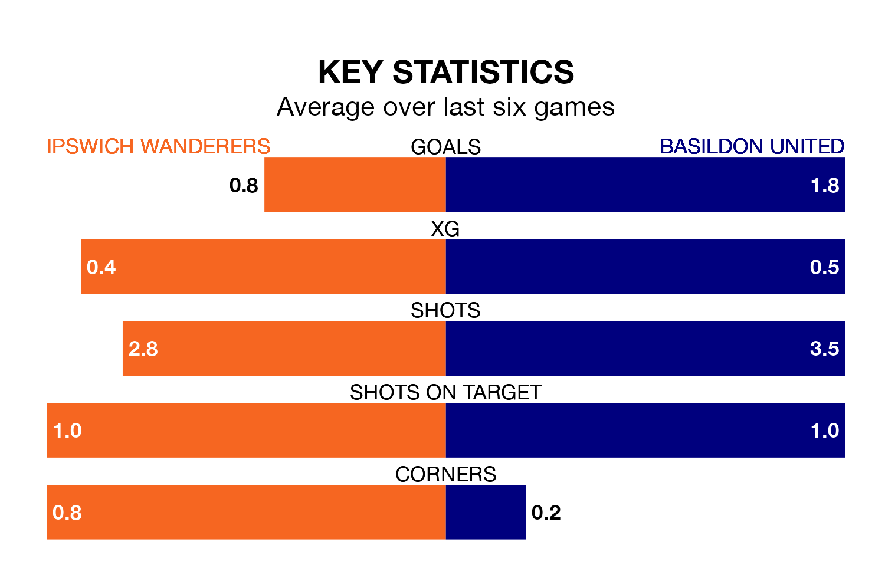

Ipswich Wanderers welcome Basildon United on Saturday looking to pick up points to end their three-game losing streak.
Ipswich's struggles have left them with just three points from their last six Isthmian League Division One – North matches, while their opponents have earned 12 from a possible 18.
With 20 goals in 22 games so far this season, Ipswich are the league's second-lowest scorers with 0.9 goals per game. And they are conceding more than average, letting in 43 goals at a rate of 2.0 per game.
Basildon, meanwhile, are above average scorers, with 2.0 goals per game, compared to a league average of 1.7. They have conceded 1.5 goals per game.
Wanderers are 18th in the table after 22 games, of which they have won five and drawn one, earning 16 points.
United are 11 places ahead of the home team in seventh, with 12 wins and three draws putting them on 39 points.
Ipswich's last match was on February 23, a 3-2 loss against New Salamis.
Basildon beat Witham Town 4-0 last time out, on February 3.
Updated: 10:19 (UTC), 22/03/24